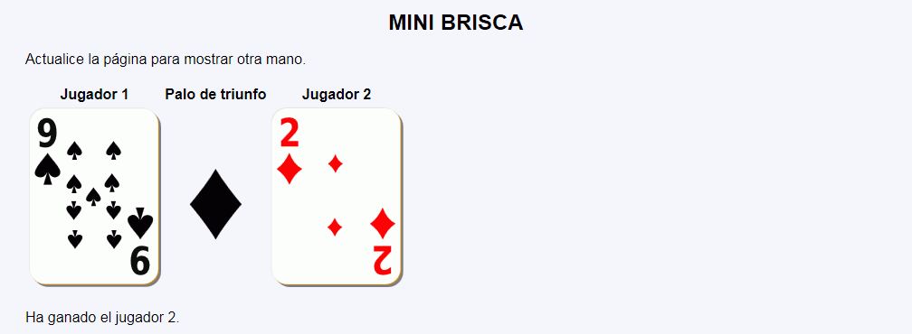
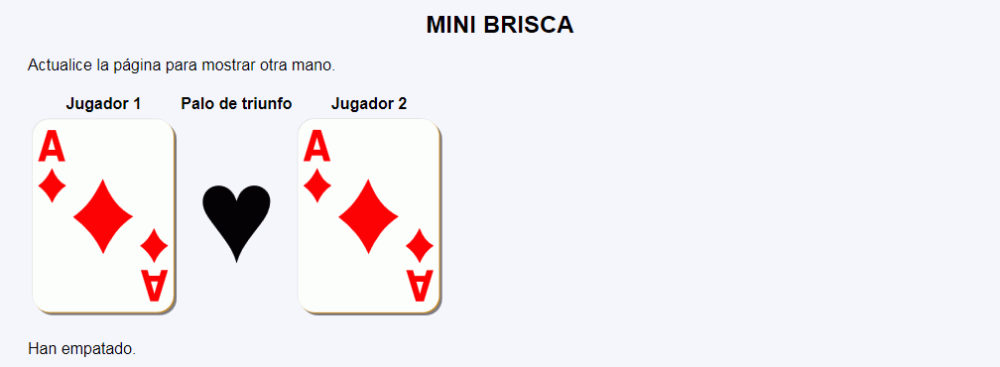
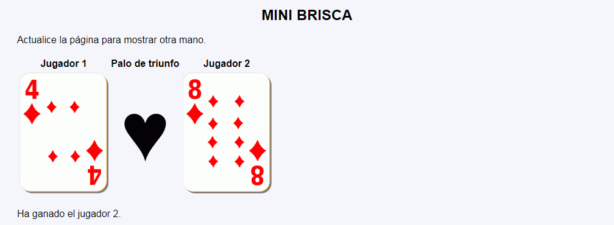
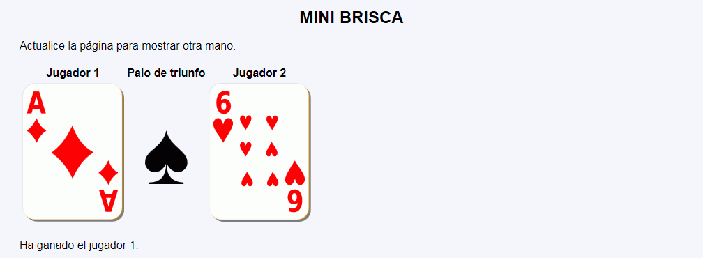

Mini brisca - Ejemplo de programa
Nota: El día del examen los alumnos no tienen acceso a este ejemplo, solamente tienen acceso a las capturas del apartado anterior.
Un ejemplo de programa puede probarse en la ventana siguiente:
En este ejercicio se debe crear un programa que muestre una jugada del juego de cartas clásico Brisca de dos jugadores e indique el ganador.




<table>
<tr>
<th>Jugador 1</th>
<th>Palo de triunfo</th>
<th>Jugador 2</th>
</tr>
<tr>
<td><img src="img/d4.svg" alt="d4" height="200" /></td>
<td style="text-align: center"><span style="font-size: 800%">♥</span></td>
<td><img src="img/d8.svg" alt="d8" height="200" /></td>
</tr>
</table>
<p>Ha ganado el jugador 2.</p>
Nota: El día del examen los alumnos no tienen acceso a este ejemplo, solamente tienen acceso a las capturas del apartado anterior.
Un ejemplo de programa puede probarse en la ventana siguiente: